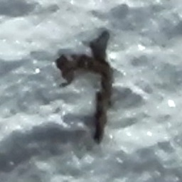
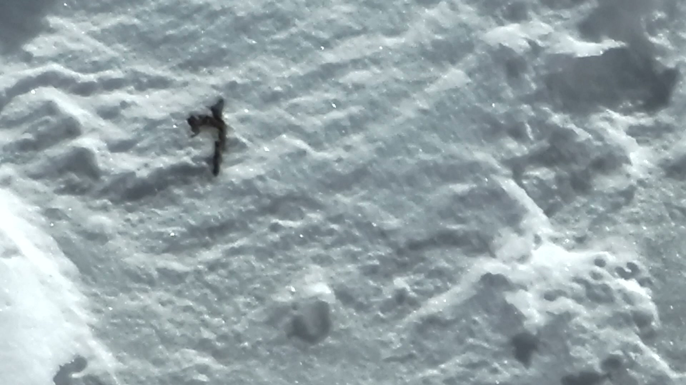
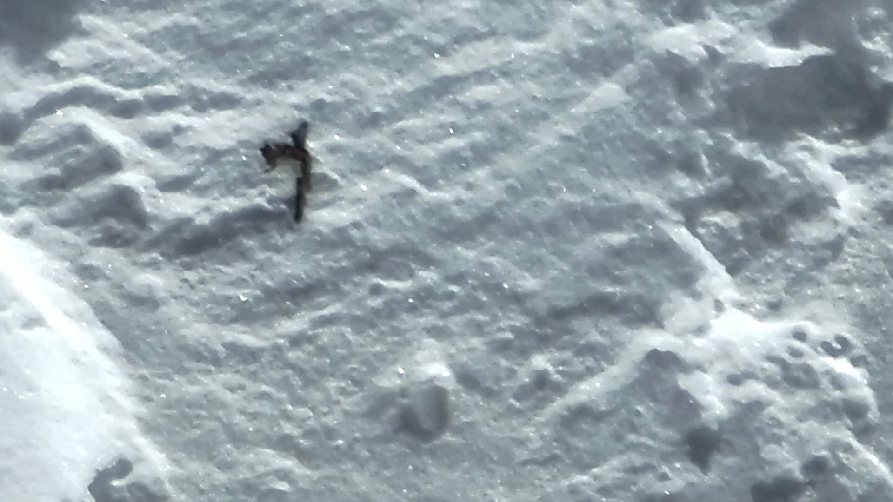
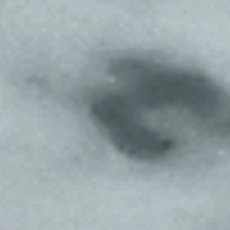
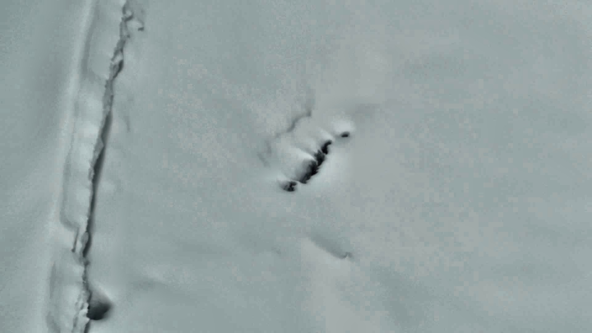

Клик по картинке — увеличение (Esc — закрыть). Цифра — уверенность по шкале штаба 1–5. Координаты и высоты — позиция дрона, не объекта: камера зумная. Источники: analysis/review/*.md, docs/video-analysis.md, docs/nakhodki/README.md.
Зона интереса: склон 5385–5485 м
Кандидаты четырёх независимых пролётов трёх дней сходятся в одну полосу склона (39.4768–39.4777 N, 73.5920–73.5923 E). Статус: приоритетная перепроверка дроном с близкого расстояния. Координаты — GPS дрона, не объекта.
Изолированный тёмный предмет на чистом снегу: прямое древко с перпендикулярной головкой — силуэт ледоруба; камней рядом нет (~5443 м)

кроп

полный кадр

полный кадр 2
Зона интереса, перескан тумана (CLAHE, порог ×2.7): поле предметов с бороздами
Перескан DJI_20260811202621_0002_Z с контрастированием и ослабленным порогом (analysis/review/rescan-low.md). На участке 5385 м в окне 0:29–1:00 — 4–6 предметов, у каждого своя борозда-шлейф; на 5395 м — борозды без предметов, которых старый прогон не видел. Участок в ~2 м от нитки планового маршрута группы (docs/marshrut/README.md). Масштаб по геопроекции (оценка вилкой, не одиночной трассировкой — устойчива к ошибке DEM): дрон висел в 15–60 м от склона, предметы ~0,2–1,3 м по длинной стороне (t1 до 2,5 м на дальней границе), борозды — метры. Кадры контрастированы CLAHE — для штаба вырезать исходные без обработки.
Округлая вмятина с тёмным ободом — воронка от упавшего тела или протаявший камень (5395 м)

кроп
Полнокадровый проход: следы и борозды (analysis/review/fullframe-tracks.md)
Цветовой детектор рельефные следы не ловит — 7 приоритетных видео просмотрены по полным кадрам с CLAHE (шаг 4 с, 100% покрытие). Калибровка: известный след срыва найден.
Калибровочный след срыва (известный): узкая борозда строго вниз по склону, без цветового отличия, читается только рельефной тенью (~5097 м). Образец искомой сигнатуры
Дальний ракурс оранжевого спальника (исправлено 14.08: ранняя геопроекция «малый фрагмент в 35 м, снят с 11 м» отозвана — ложное пересечение луча; подлёт 3:02→3:28 на 59 м показывает тот же объект, что крупно на 3:26–4:00)
Локальный провал снежного моста у бергшрунда: тёмная полость, вывороченные блоки наста, следов подхода не видно (5088 м)

кадр CLAHE
Оранжевый спальник Николая — атрибуция скрина «Вещи #1721»
Крупный оранжевый предмет один (исправлено 14.08: «отдельный малый фрагмент в 35 м» отозван — ложное пересечение луча на кадре 3:02, подлёт дрона показывает тот же объект). Позиция ~39.48325–39.48331, 73.58509–73.58518, ~4558 м (в 10–15 м от стакана), как точку не выдавать. Консенсус TG — спальник Николая (Скриншоты #758, #820); документ CC называет «курткой». Рядом в кадре 1:28 — мелкий оранжевый фрагмент ~0,2 м.
Плоский бледно-зелёный прямоугольник с прямыми кромками и мелкозернистой текстурой на бурой осыпи — похоже на фрагмент пенки/каремата; в ~40 м от кластера палка/крышка (4556 м)
Палка крупным планом: на древке читается бренд «CAMP» с оранжевой отделкой. В реестре палки описаны как Komperdell — бренд может помочь штабу опознать владельца (проверено: надпись читается)
Синий рюкзак Николая с дрона (перепроверено по полным кадрам: объект один, лежит на той же кварцевой полосе, что в вертолётном кадре C0049). Новый ракурс известной находки, не новая вещь